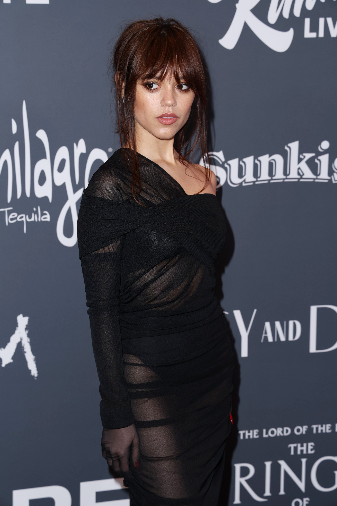
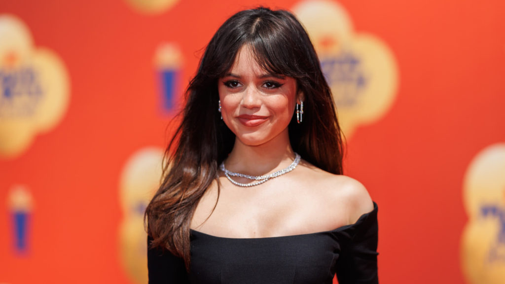
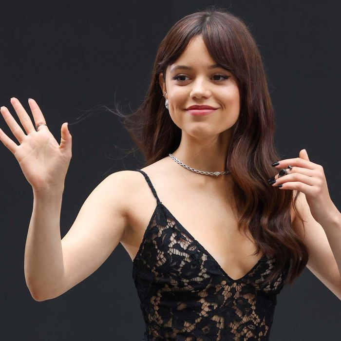
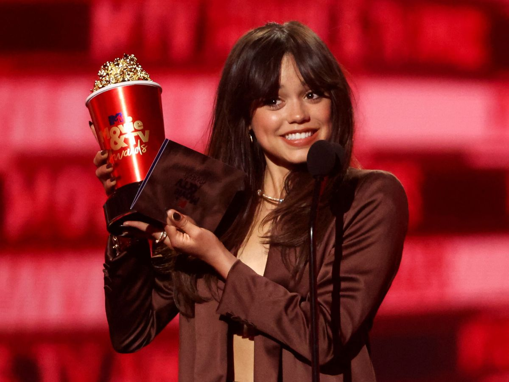

|
|||
| Inicio | Biografia | Logros | Contacto |
Jenna Ortega |
|||
|  | |||
| s una actriz estadounidense, pero a la vez con nacionalidad mexicana y puertorriqueña . Comenzó su carrera como actriz infantil, recibiendo reconocimiento por varios papeles. Obtuvo un gran avance como actriz al interpretar a Harley Díaz en la serie de Disney Channel Stuck in the Middle | |||
|  |  |  | |
Derechos reservados 2022 |
|||